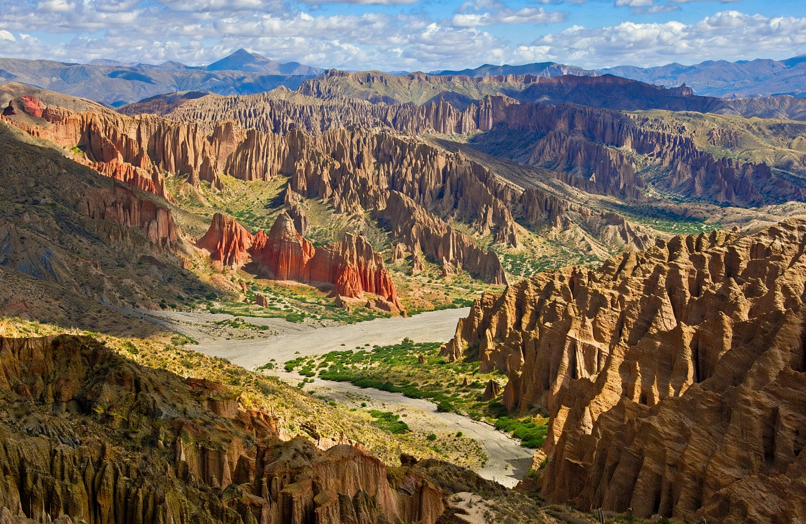

Villazón
Puerta de entrada a la frontera con Argentina.

TRANS AZUL BOLIVIA
VILLAZÓN
Conexión directa con la frontera, comercio y cultura del sur boliviano.
Conoce Villazón
Villazón es la ciudad fronteriza más importante del sur de Bolivia, conectada con La Quiaca (Argentina). Punto estratégico de comercio y tránsito internacional.
Lugares turísticos
Plaza Central
Centro de la ciudad, punto de encuentro fronterizo.

Puente Internacional
Conexión entre Villazón y La Quiaca, Argentina.

Mercado Fronterizo
Comercio intenso y productos de ambos países.